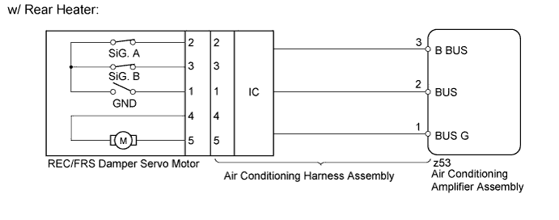
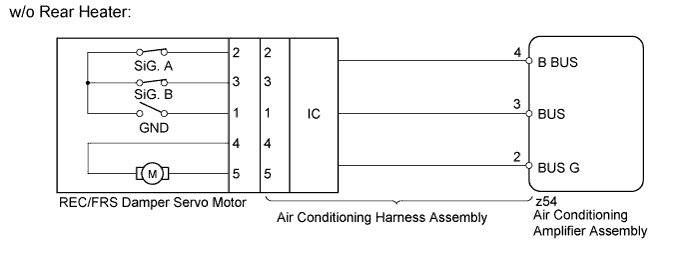

DTC B1442/42 Air Inlet Damper Control Servo Motor Circuit |
| DTC Code | DTC Detection Condition | Trouble Area |
| B1442/42 | The air inlet damper position does not change even if the air conditioning amplifier assembly operates the REC/FRS damper servo motor. |
|


| 1.READ VALUE USING INTELLIGENT TESTER (REC/FRS DAMPER SERVO MOTOR) |
Use the Data List to check if the servo motor is functioning properly.
| Tester Display | Measurement Item/Range | Normal Condition | Diagnostic Note |
| Air Inlet Damper Targ Pulse | REC/FRS damper servo motor target pulse / Min.: 9, Max.: 37 | for LHD Recirculation: 37 (pulse) Fresh: 9 (pulse) for RHD Recirculation: 9 (pulse) Fresh: 37 (pulse) | - |
|
| ||||
| OK | ||
| ||
| 2.CHECK REC/FRS DAMPER SERVO MOTOR (OPERATION) |
for LHD:
Replace the REC/FRS damper servo motor (Click here).
for RHD
Replace the REC/FRS damper servo motor (Click here).
| NEXT | |
| 3.CHECK FOR DTC |
Clear the DTCs (Click here).
Check for DTCs (Click here).
| Result | Proceed to |
| OK (for LHD) | A |
| OK (for RHD) | B |
| NG (for LHD) | C |
| NG (for RHD) | D |
|
| ||||
|
| ||||
|
| ||||
| A | ||
| ||